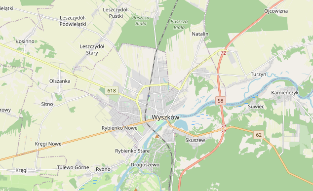
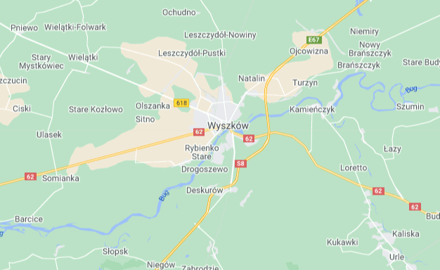
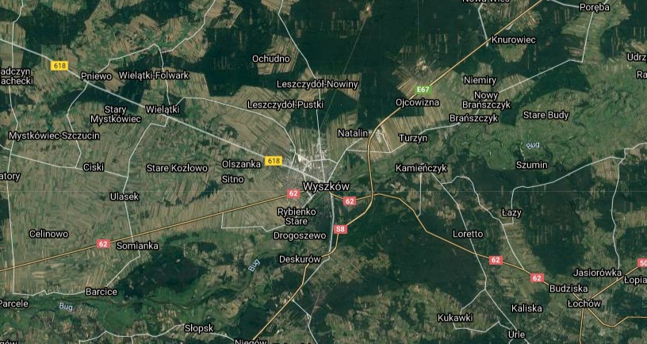
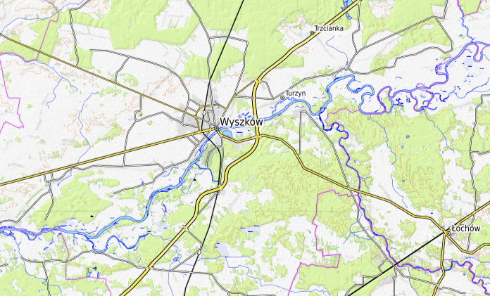

Infomacje wstępne dotyczące projektu
Dostęp do aktualnej i dokładnej informacji przestrzennej obejmującej dane o środowisku geograficznym, obiektach i zjawiskach w całej przestrzeni otaczającej człowieka ma ogromne znaczenie w poprawnym funkcjonowaniu państwa, jego gospodarki i obywateli. Informacja przestrzenna jest wykorzystywana niemal we wszystkich sektorach gospodarki – m.in. w rolnictwie, leśnictwie, budownictwie, a także w administracji państwowej oraz działalności podmiotów prywatnych. W celu budowy społeczeństwa informacyjnego, rozwoju przedsiębiorczości, podniesienia innowacyjności i konkurencyjności przedsiębiorstw na rynku, a także zapewnienia rozwoju gospodarczego kraju, niezbędny jest powszechny i łatwy dostęp do informacji przestrzennej w formie elektronicznej. Dzięki portalowi PROGRAMOWANIE GEOPORTALI umożliwiony zostanie powszechny dostęp i stosowanie informacji przestrzennej w Polsce i nie tylko. Ogólne korzyści z wdrożenia projektu PROGRAMOWANIE GEOPORTALI to poprawa jakości informacji przestrzennych zawartych w rejestrach referencyjnych, a także poprawa efektywności udostępniania danych przestrzennych i tym samym ich wykorzystywania przez ostatecznych użytkowników.



